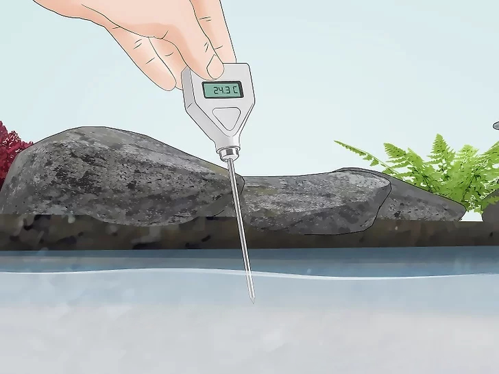

Temperature
Temperature, measure of hotness or coldness expressed in terms of any of several arbitrary scales and indicating the direction in which heat energy will spontaneously flow—i.e., from a hotter body (one at a higher temperature) to a colder body (one at a lower temperature). Temperature is not the equivalent of the energy of a thermodynamic system; e.g., a burning match is at a much higher temperature than an iceberg, but the total heat energy contained in an iceberg is much greater than the energy contained in a match. Temperature, similar to pressure or density, is called an intensive property—one that is independent of the quantity of matter being considered—as distinguished from extensive properties, such as mass or volume. Three temperature scales are in general use today. The Fahrenheit (°F) temperature scale is used in the United States and a few other English-speaking countries. The Celsius (°C) temperature scale is standard in virtually all countries that have adopted the metric system of measurement, and it is widely used in the sciences. The Kelvin (K) scale, an absolute temperature scale (obtained by shifting the Celsius scale by −273.15° so that absolute zero coincides with 0 K), is recognized as the international standard for scientific temperature measurement.
Three temperature scales are in general use today. The Fahrenheit (°F) temperature scale is used in the United States and a few other English-speaking countries. The Celsius (°C) temperature scale is standard in virtually all countries that have adopted the metric system of measurement, and it is widely used in the sciences. The Kelvin (K) scale, an absolute temperature scale (obtained by shifting the Celsius scale by −273.15° so that absolute zero coincides with 0 K), is recognized as the international standard for scientific temperature measurement.
Why we monitor water temperature: Water temperature influences the rates of chemical and biological processes and affects other measured parameters (e.g. as temperature increases, the maximum amount of dissolved oxygen decreases). Water temperature is one of the most important parameters for aquatic organisms. Many animals have adapted to a specific range of temperatures and temperatures warmer than these can cause stress or even death. For example, trout are cold water fish that have trouble surviving when the water temperature is above 20 °C. What influences water temperature: Water temperature is determined by the climate of the watershed, seasonal patterns and local influences. During the summer, lakes and reservoirs generally have a layer of warm and less dense water that floats above colder, denser water at the bottom of the reservoir. The density difference between these two layers creates a surprising amount of resistance to mixing, so the two layers stay separate for much of the summer. In the fall, the temperatures cool at the surface and the lake eventually mixes from top to bottom. A winter lake, especially one with ice cover, may have “reverse stratification” where slightly warmer water floats above the most dense water, which occurs at about 4.5 °C. In the spring, the lake mixes from top to bottom. The warming of the late spring and summer sun creates the warm later again. Local influences on lake temperatures include upstream discharges of warmer water from natural springs or cooling water from power plants, shading provided by the littoral zone (the vegetation along the edge of the lake), lake depth, and the amount of suspended material in the water. recording the temperature.

Information courtesy of U.S. Environmental Protection Agency